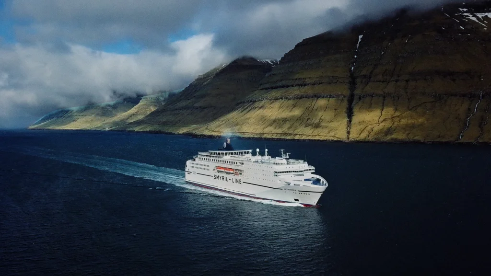
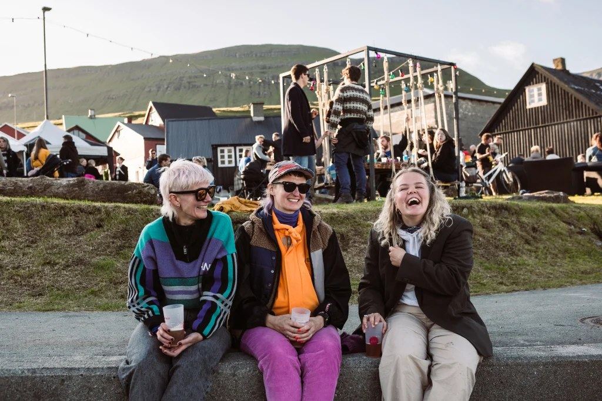

Know the Faroes
认识法罗
法罗是什么，它在哪里，以及这片北大西洋群岛为何独特。

Overview
法罗群岛简介
法罗群岛位于北大西洋，介于冰岛、挪威与苏格兰之间，由十八座主要岛屿组成。首都是托尔斯港 Tórshavn。这里是丹麦王国下的自治地区，官方语言为法罗语，丹麦语亦通用。
岛屿由玄武岩、峡湾、草地与大西洋共同塑造。天气变化很快，风景也因此不断改写。认识法罗，先从它的位置、岛屿轮廓，以及岛上的人与土地开始。
Landscapes
岛屿印象


On the map
法罗在哪里
十八座岛屿散落在北大西洋中。首都托尔斯港位于斯特莱默岛 Streymoy。